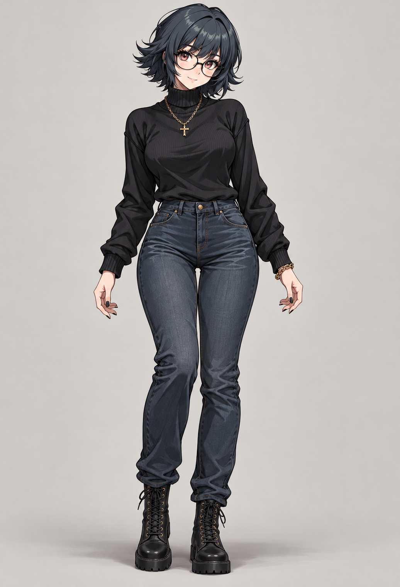
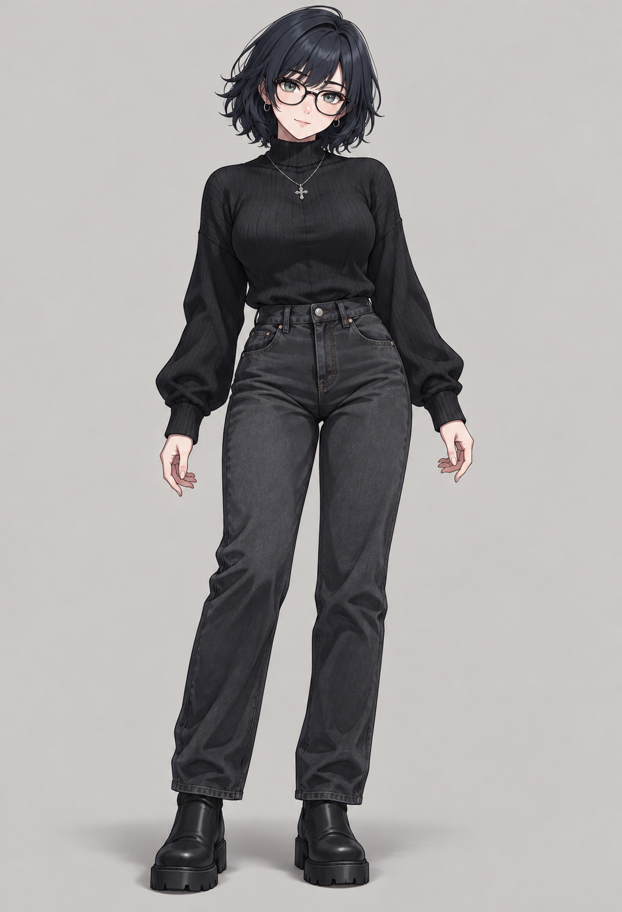
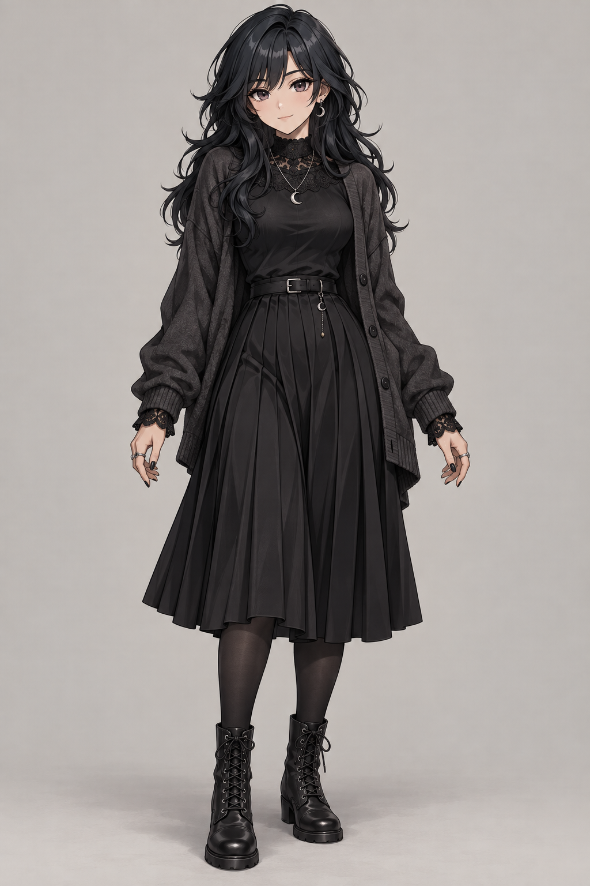
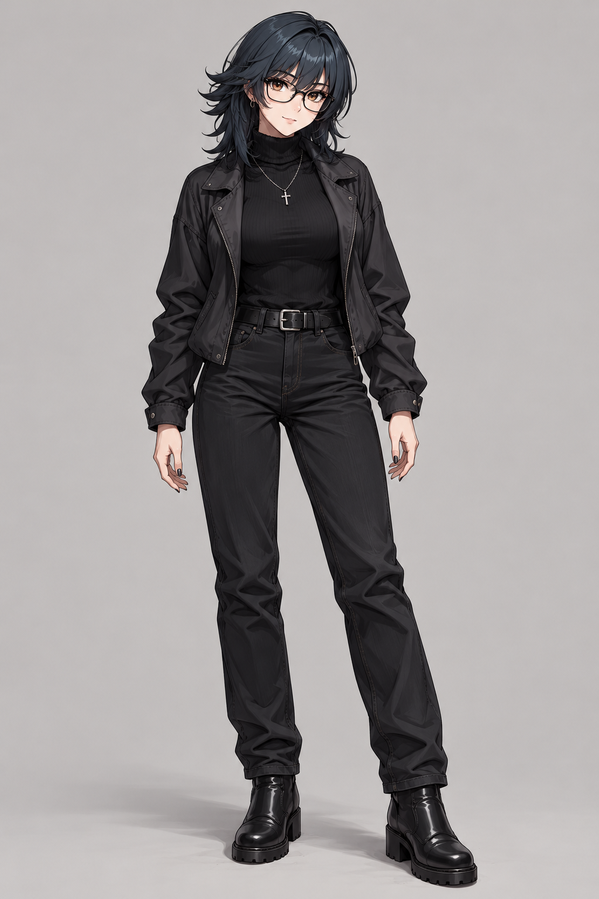

OPTION 01
Soft classic
Closest to your reference: tousled bob, round glasses, black turtleneck, blue-black denim, and gold accents.
Open full-size option 1 ↗

Selected Option 1: view the neutral character and wardrobe studies →
Four concepts for a 20-year-old woman, inspired by your reference. Compare the face, hair, outfit, and illustration style. Tap any artwork to see it at full size.
Closest to your reference: tousled bob, round glasses, black turtleneck, blue-black denim, and gold accents.
Open full-size option 1 ↗
Soft knitwear, relaxed sleeves, washed charcoal jeans, delicate glasses, and understated silver jewelry.
Open full-size option 2 ↗
Long waves, lace trim, a soft cardigan, pleated skirt, and a crescent pendant.
Open full-size option 3 ↗
Layered dark hair, glasses, a light jacket, black jeans, and a slightly sharper outfit with a gentle expression.
Open full-size option 4 ↗